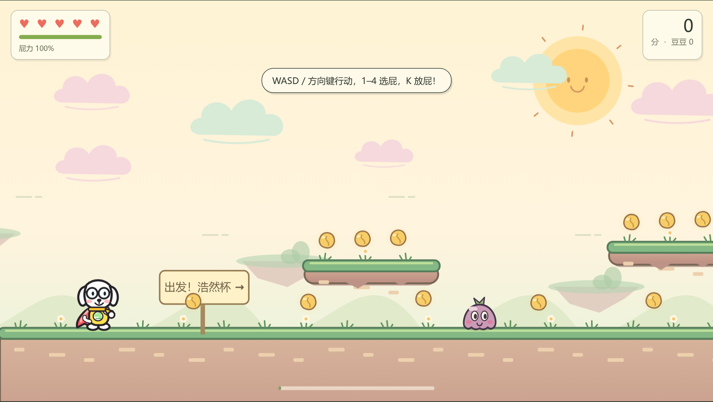
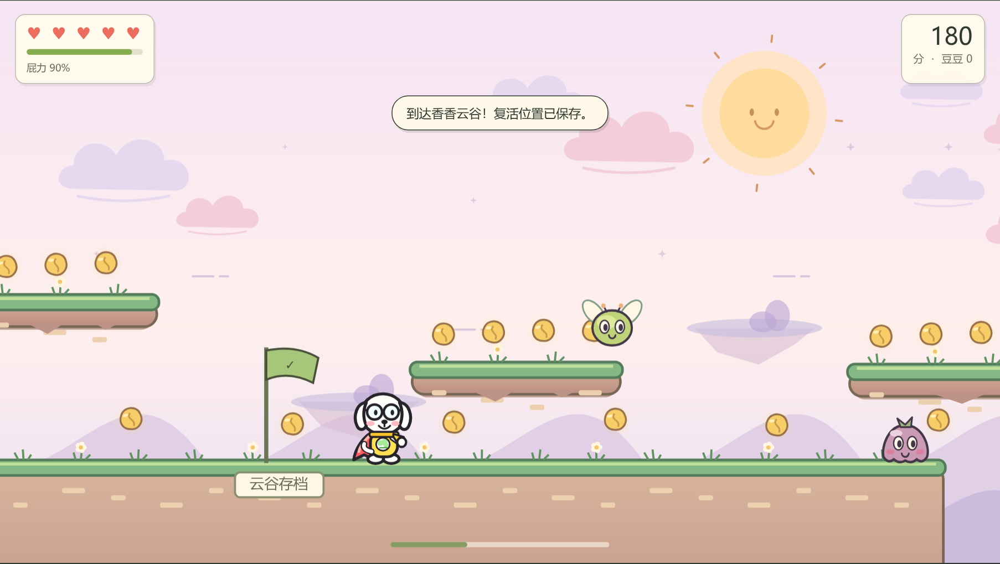
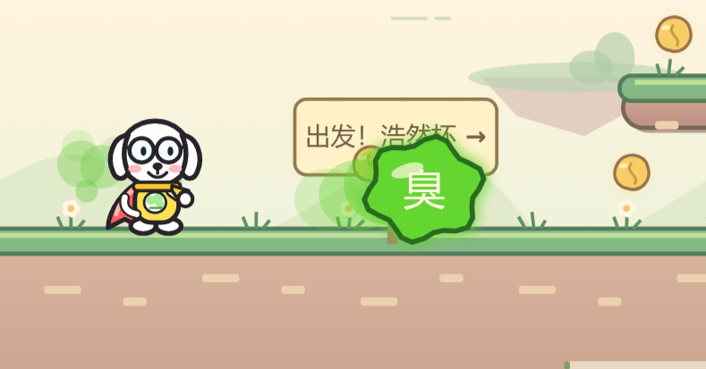
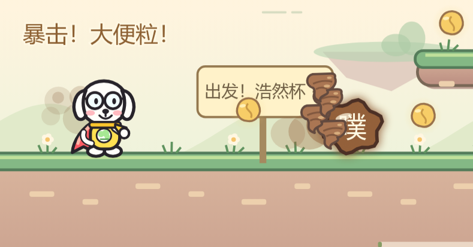
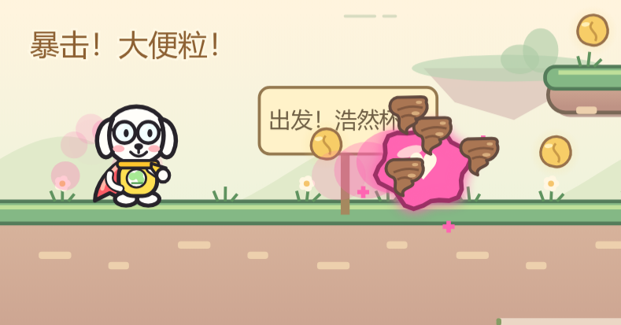
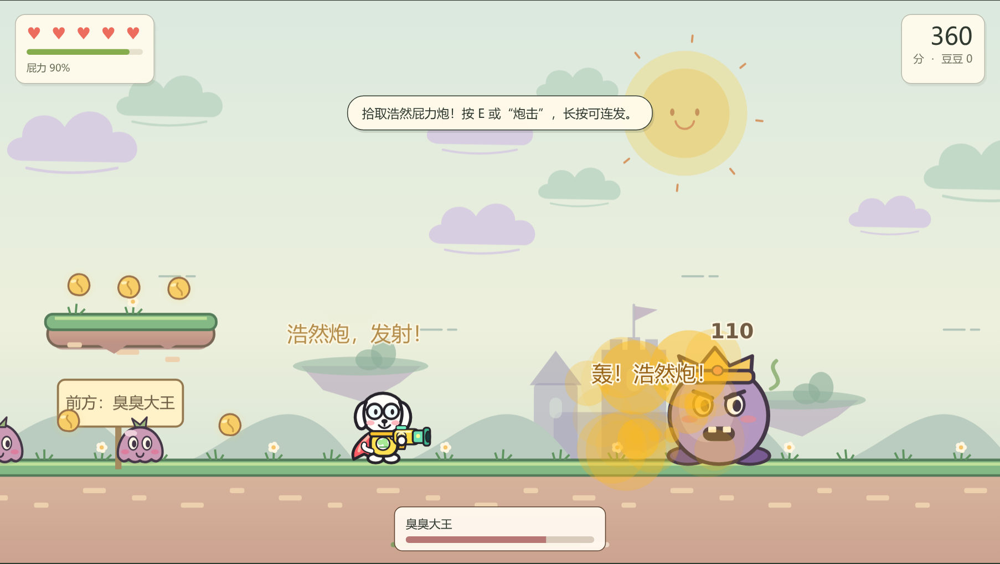
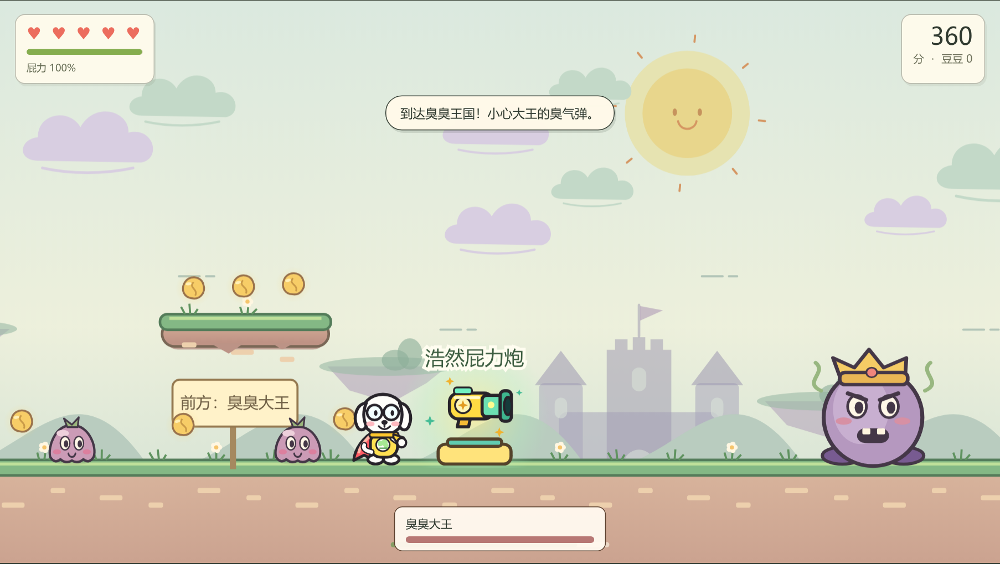
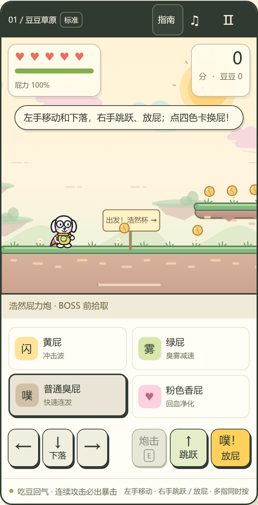
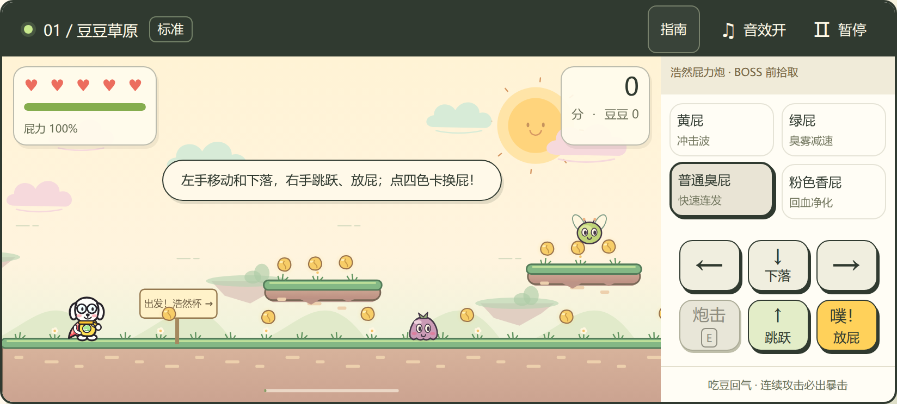

从开始、闯关、失败到获胜，先打通游戏闭环。
开发全流程图文报告

4种屁技能3档难度2类设备1座浩然杯
戴圆眼镜的小狗，用四色屁和大便粒暴击闯关，拿起浩然屁力炮，击败最终 BOSS，赢得浩然杯。
点击开始玩 → GitHub Pages 公开版
查看 GitHub 源码 → XFDG / fart-superman-baisiyu
开发全流程图文报告

戴圆眼镜的小狗，用四色屁和大便粒暴击闯关，拿起浩然屁力炮，击败最终 BOSS，赢得浩然杯。
点击开始玩 → GitHub Pages 公开版
查看 GitHub 源码 → XFDG / fart-superman-baisiyu
先确定体验，再把每次反馈落实到下一版。
| 阶段 | 用户提出的目标 | 落地结果 |
|---|---|---|
| 调研 | 寻找 GitHub 可复用项目；手机与电脑都能玩 | 记录 10 个候选，比较玩法、移动端、许可证与维护情况 |
| 首版 | 四色屁、大便粒暴击、好玩的音效、浩然杯 | 横版平台冒险；完整胜负流程；合成音效 |
| 强化 | 公开发布；大 UI；更浓的特效；难度；武器；圆眼镜小狗 | v1.1：三档难度、原创小狗、浩然屁力炮、响应式界面 |
| 易用性 | WASD / 方向键、1234、K；手机操作；操作指南 | v1.2：统一输入、下落动作、可随时打开的指南 |
| 交付 | 继续完成开发，并提供带图的 PDF | 发布验证、图文报告、源码与可复现资料 |
单人、单关卡的横向冒险；浏览器直接运行，包含开始、暂停、失败、胜利和重新挑战。电脑用键盘，手机用屏幕按键。最佳成绩、难度和静音偏好保存在当前浏览器。
调研形成 10 个候选：8 个游戏、2 个模板。下面的 Stars 和授权信息均为 2026-10-02 仓库调研快照，不代表持续更新的数据。
| 项目简称 | Stars | 授权记录 | 适配判断 |
|---|---|---|---|
| captain-gastronaut | 4 | package ISC | 放屁推进；素材授权仍需核验 |
| fart-flyer | 0 | 未见根许可证 | 题材接近；文档不足 |
| FartAndFurious | 1 | 未见许可证 | 硬件 / 串口玩法，改造成本高 |
| sprout-runner | 0 | README 声明 MIT | Canvas 平台跳跃，含触控 |
| CatJump / phaser3-plataformer | 7 | MIT | 双跳、排行榜；旧依赖 |
| EndlessRunnerGame | 0 | MIT | 三车道跑酷；键盘与触控 |
| phaser3-platformer | 7 | MIT | Phaser / TS 平台游戏样例 |
| fartnoises | 0 | CC BY-NC-SA | 声音派对；需服务端 |
| phaser-game-template | 0 | MIT | Phaser / Vite；移动输入与部署 |
| phaserjs/template-vite | 138 | MIT | 官方模板；快照包版本为 Phaser 4 |
4 组搜索返回 28 / 6 / 12 / 338 个匹配项，关键词结果有重叠和噪声，不能相加当作独立游戏数量。候选未逐一编译试玩；授权判断也不等同于素材授权审计。
调研阶段倾向 Phaser 模板；实现时选择原生 Canvas，以较小代码规模完成定制玩法，并减少运行依赖。最终游戏代码、绘图和声音为本项目实现，没有复制候选项目代码或素材。调研的价值主要是比较玩法结构、移动交互和部署方案。
HTML 管界面，Canvas 管世界，Web Audio 管声音。
| 文件 | 职责 |
|---|---|
| index.html | 开始菜单、血量 / 能量 / 分数、技能卡、触控、操作指南 |
| style.css | 大字号、桌面 / 手机横竖屏布局、弹窗与按键尺寸 |
| src/game.js | 逐帧更新、碰撞、技能、BOSS、输入与 localStorage |
| src/art.js | 原创角色、地图、敌人、粒子、奖杯、武器绘制 |
| src/audio.js | 跳跃、屁声、暴击、拾取、胜负等事件声音 |
| tools/serve.mjs / check.mjs | 本地静态服务；语法与必需文件检查 |
游戏运行无需后端、数据库或 npm 运行时依赖。Node ≥ 20 仅用于本地开发工具。package.json 的 private 字段阻止误发布到 npm，不影响 GitHub 仓库公开。

横向坐标示意，非等比例。世界宽 6920；4 段地面、14 个悬浮平台、13 个普通敌人与 1 个 BOSS。
支持二段跳；离开平台后有 0.12 秒起跳宽限，提前按跳有 0.14 秒输入缓冲。向下键可穿过悬浮平台，在空中按住则加速下落，实心地面不会被穿透。
豆子恢复 15 能量；受伤后有 1.6 秒无敌时间。跌落扣一颗心并回到最近检查点，同一局已经拾取的大炮保留。分数来自豆子、敌人、检查点、BOSS 和通关，再按难度倍率结算。
requestAnimationFrame 驱动输入 → 物理 / 战斗更新 → 镜头 → 绘制。单帧时间做上限控制，并把更新细分为较短步长，减少长帧导致的碰撞异常。暂停和切到后台时清理按住的输入。



| 类型 | 能量 / 冷却 | 直接伤害 | 差异化效果 |
|---|---|---|---|
| 黄屁 | 14 / 0.46 秒 | 34 | 击退；邻近目标受到 15 溅射伤害 |
| 绿屁 | 20 / 0.65 秒 | 16 | 毒区持续 3 秒，每 0.45 秒造成 7 伤害；地面目标减速 |
| 普通臭屁 | 8 / 0.26 秒 | 21 | 适合持续攻击与节约能量 |
| 粉色香屁 | 22 / 0.62 秒 | 19 | 未满血时恢复一颗心；治疗冷却 4.5 秒 |
暴击生成 4 颗“大便粒”，每颗命中造成 17 伤害。轻松 / 标准 / 挑战的基础触发概率为 30% / 23% / 20%；连续未暴击时，第 4 次攻击保证触发。弹丸需要实际命中，不能把它描述成必定追加 68 点伤害。

大炮位于最终战之前，拾取后在当前局保留。每发消耗 18 能量，直接伤害 110，可对附近其他敌人造成 40 点溅射伤害。它独立于当前选中的屁类型，玩家可交替使用技能与武器。
| 参数 | 轻松 | 标准 | 挑战 |
|---|---|---|---|
| 初始生命 | 7 | 5 | 3 |
| 普通敌人血量倍率 | 0.72 | 1.00 | 1.35 |
| BOSS 生命 | 290 | 430 | 680 |
| 敌人速度倍率 | 0.80 | 1.00 | 1.30 |
| 每秒能量回复 | 19 | 13 | 10 |
| BOSS 弹速 | 150 | 205 | 270 |
| BOSS 常态攻击间隔 | 3.1 秒 | 2.5 秒 | 1.75 秒 |
| 大炮冷却 | 1.6 秒 | 1.9 秒 | 2.2 秒 |
| 得分倍率 | 0.85 | 1.00 | 1.40 |
挑战模式使用三发散射；BOSS 血量低于 40% 后，攻击间隔缩短为原来的 72%。击败 BOSS 后还需走到奖杯处才算通关，避免战斗结束与目标达成脱节。
首版是小超人。第二轮按需求改为白色线条小狗：圆眼镜、垂耳、腮红，加上黄色服装和红色披风保留“超人”的辨识度。角色从 36 × 52 调整为 44 × 60 逻辑像素，使小屏幕上也能看清眼镜与表情。
角色、敌人、草地、云朵、城堡、豆子和奖杯采用 Canvas 几何路径与色块。程序绘制便于跟随朝向、动作状态和拾取装备实时变化，不需要下载一整套外部精灵素材。


保留宽画面和明确的 HUD，使用键盘操作。技能卡同时提供文字和颜色，避免只靠颜色理解技能。
左手控制左右与下落，右手负责跳跃、攻击和大炮。点击技能卡切换类型，支持移动与攻击等多点触控组合。
320 像素宽时将按键整理成左右拇指区；关键按键至少 44 像素，避免点击目标过小。

画布逻辑高度固定为 540，宽度随显示比例计算，设备像素比上限为 2。布局兼顾可读性与可操作面积；这些检查来自浏览器模拟，还需要实体手机进一步验证握持与触感。
| 动作 | 电脑 | 手机 |
|---|---|---|
| 移动 | A / D 或 ← / → | 左侧 ← / → 按钮 |
| 跳跃 / 二段跳 | W / ↑（也支持空格） | 右侧“跳跃”按钮 |
| 下穿平台 / 加速下落 | S / ↓ | 左侧 ↓ 按钮 |
| 选择技能 | 1 黄屁 · 2 绿屁 · 3 臭屁 · 4 香屁 | 点击对应技能卡 |
| 放屁攻击 | K；可按住连续攻击 | “放屁”按钮；可长按 |
| 武器攻击 | 拾取后按 E；可按住 | 拾取后点“大炮”按钮 |
| 暂停 / 继续 | P / Esc 或界面按钮 | 界面暂停按钮 |
| 查看指南 | 点击“操作指南” | 点击“指南” |
指南使用原生 dialog。游戏中打开会暂停，关闭后恢复原状态；在已暂停状态下打开再关闭，仍保持暂停。Esc 关闭指南时不会顺带切换游戏暂停状态。弹窗正文可滚动，关闭入口固定，焦点回到入口按钮。
不依赖音频下载，用不同音色表达技能与反馈。
| 事件组 | 声音目的 |
|---|---|
| 四种屁 | 用不同合成音色强调技能差异 |
| 暴击与命中 | 让额外弹丸与打中敌人的结果更明确 |
| 跳跃与受伤 | 提示动作起点和失血 |
| 豆子与检查点 | 强化收集和推进反馈 |
| 胜利与失败 | 给一局游戏明确的听觉收尾 |
音频在玩家首次交互后解锁，兼容 AudioContext / webkitAudioContext。最多保留 36 个声音实例，并对事件做短间隔限制；主音量与压缩处理防止大量声音同时触发时过度堆叠。
提供静音开关并保存偏好。音频不可用时安全降级，不阻断游戏。本版本使用事件音效，没有宣称已加入背景音乐。实际听感仍会随设备扬声器不同，需要后续真机试听。
以下时间来自 Git 提交记录，时区为北京时间。提交时间表示记录落库的时刻，不能用于推算真实开发工时。
| 时间 / 提交 | 变更 | 解决的问题 |
|---|---|---|
| 11:49:30 · c30d72d | 建立 GitHub 调研文档 | 先了解可复用项目、授权与技术方向 |
| 12:08:33 · d0e164f | 发布可玩的首版 | 完成角色、战斗、关卡、音效、触控与奖杯 |
| 12:08:46 · 3f5c41f | 修正小手机开始菜单 | 避免 320 宽视口菜单被裁切 |
| 13:09:52 · c7ec8a4 | 小狗、难度、BOSS 大炮 | 落实外形、挑战性、特效和武器反馈 |
| 13:22:28 · 53f35a4 | 操作指南与统一输入 | 落实 1234 选技能、K 攻击和下落操作 |
| 13:22:52 · 800d828 | 浏览器资源版本号 | 让更新后的操作规则及时加载 |
从开始、闯关、失败到获胜，先打通游戏闭环。
大 UI、强特效、圆眼镜小狗、难度与最终武器。
按键映射稳定、手机组合操作可用、随时查看指南。
| 层级 | 证据 | 覆盖范围 |
|---|---|---|
| 静态检查 | npm run check | JavaScript 语法与必要文件存在性 |
| v1.0 浏览器记录 | 29 组检查 | 17 组桌面、8 组移动、4 组视口检查 |
| v1.1 浏览器记录 | 28 组通过 | 难度、角色、武器、战斗、响应式与回归 |
| v1.2 浏览器记录 | 26 组通过 | 键盘映射、下落、指南、触控与回归 |
| 公开站点复验 | public-verification.json | 资源 HTTP 200；电脑与 390 手机视口操作通过 |
环境为 Linux Chrome 147 与 Playwright / CDP。手机是移动视口与触控模拟，未代表实体 iPhone Safari 或所有安卓浏览器均已验证。不同版本检查项存在重叠，29、28、26 不能相加宣称独立测试总数。
| 观察到的问题 | 原因与处理 | 验证方法 |
|---|---|---|
| 320 宽手机菜单显示不全 | 调整弹层尺寸与小屏布局 | 检查开始按钮与菜单边界 |
| 静音刷新后不一致 | 写入 true 与读取 1 不一致；统一格式并兼容旧值 | 切换后重载，检查存储与音频状态 |
| 快速轻按偶尔没发射 | 按下和松开可能都发生在帧之间；按下立即尝试攻击 | 短按检查弹丸，长按检查冷却 |
| 移动按钮过窄 | 部分宽度约 40px；调整为至少 44px | 读取元素尺寸并验证触控 |
| 横屏操作区超出高度 | 按可视高度与横屏布局重新分配空间 | 844 × 390 和窄屏检查 |
| 旧按键逻辑被浏览器缓存 | CSS、入口和内部模块加入 v=1.2 | 公网读取资源 URL 并试用 K / 1234 |
| 指南关闭测试偶发失败 | 测试读取早于原生 close 事件；等待事件完成 | 验证恢复状态；此项是测试时序修正 |
对原生弹窗一类异步行为，验证应等待浏览器完成状态切换。修正测试时序后再判断产品行为；否则可能为了消除假失败而引入不必要的逻辑改动。
本地通过只能证明当前工作目录。部署完成后，还要检查实际站点是否拿到了新文件，并重新执行关键操作，才能确认用户打开的版本已经更新。
一个公开仓库，一套静态文件，一个可分享的网址。
GitHub 仓库为 Public；Pages 从 main 分支根目录发布，启用 HTTPS，使用 .nojekyll 保持静态文件直接服务。已验证的游戏发布提交为 800d828。报告文件的提交随后追加，不改变该游戏版本的验证基线。
git clone https://github.com/XFDG/fart-superman-baisiyu.git cd fart-superman-baisiyu npm run check npm run dev # 浏览器打开 http://localhost:4173
需要 Node ≥ 20；本项目没有运行时 npm 依赖。使用本地服务打开 ES 模块，避免直接双击 HTML 造成模块加载限制。
index.html / style.css / src/ 游戏源码 tools/ 本地开发与报告构建工具 docs/github-research.md 候选分析与选型 docs/research/ GitHub 快照和授权记录 docs/validation.md 各版本验证说明 docs/browser-validation*.json 结构化验证结果 docs/development-report/ PDF、HTML、插图与公网验证
浏览器最高分保存在本机 localStorage，不会自动同步到其他设备。发布依赖 GitHub Pages；项目并未增加独立后端运维。
公开网页、公开源码、三档难度、四色屁与暴击、圆眼镜小狗、最终武器、合成音效、电脑 / 手机输入、操作指南，以及本报告的源文件和插图。
优先在实体 iPhone / 安卓设备上验证多点触控、声音解锁与横竖屏切换；再邀请玩家测试三档难度、技能使用率和 BOSS 耗时。之后可增加新关卡、敌人类型与更丰富的声音反馈。若需要排行榜或云存档，再评估后端与账号方案。